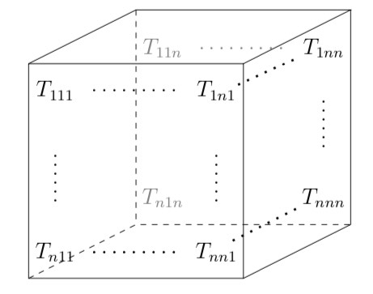
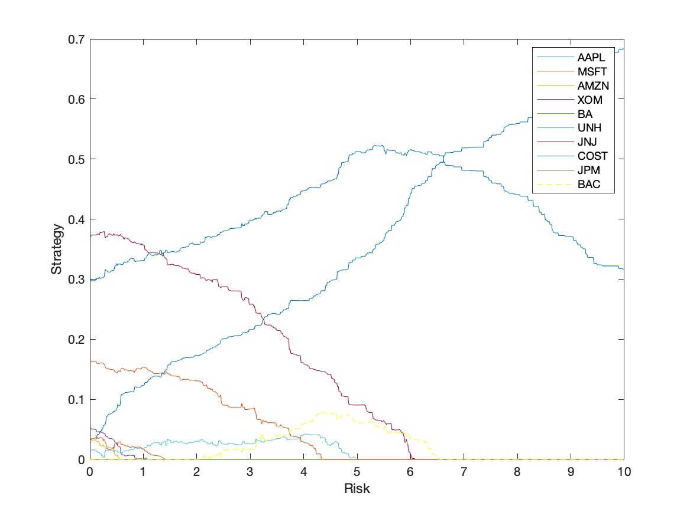
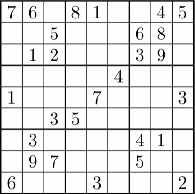
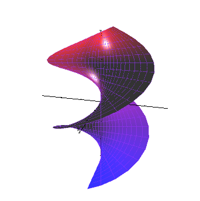
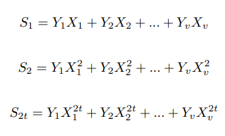
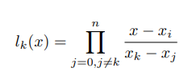

Jimmy Sitompul, Emma Dilley, Maya Pachkowski, Kayla Robledo
May 2023
Through the use of Singular Value Decomposition and Principal Com- ponent Analysis, we performed several “transformations” on a data set containing images of dogs and cats to explore the process of facial recognition. For each image class, we found the average cat and dog images as well as the symmetrized cat and dog images. After doubling the data set, we obtained clear eigencat and eigendog images. We obtained greater error when we projected a dog image onto the cat image class. We found a smaller dataset resulted in quick run time but our model would be im- proved with a larger data set that includes images in color with a variety of poses and lighting conditions.

Jimmy Sitompul
May 2023
Applying basic linear algebra concepts, such as vectors and matrices, as a foundation for working with various datasets is essential. Nevertheless, some of us may question whether these concepts are sufficient to represent higher- dimensional data structures, such as colored images. Indeed, these standard linear algebra concepts are insufficient for analyzing and manipulating the complex structures of these higher-dimensional data. This paper will discuss multilinear algebra and tensors, specifically Kronecker products, which are established on traditional linear algebra concepts such as linear transformations and dual spaces. In addition, this paper will discuss the process of rescaling an image and the applications of rank-n tensors in representing colored image datasets. To simplify the reading of this paper, vector spaces over R will be considered exclusively.

Jimmy Sitompul, Emma Dilley, Ryan Kessler, Avery McCrystal
May 2023
Our project focuses on the comparison of four different portfolios comprised of ten financial instruments each as well as a combined portfolio
in order to determine which, under the Markowitz portfolio strategy, are
most effective at maximizing returns under assumed acceptable levels of
risk. We use our individual training data sets to compute a Markowitz
strategy y over a range of risk parameters, plot our strategies against one
another, and subsequently use validation data to evaluate the best risk
parameter and testing data to assess strategy. Moreover, we analyze these
results against the game theory framework wherein there is no notion of
risk.
Our results find that financial currencies, as stable assets, yield less
competitive returns for the same level of risk. Therefore, portfolios that
were comprised heavily or solely of these instruments did not give higher
payoffs as investment strategies. Using stocks alone as investment instruments notably increases risk, but compensates for this lessened stability
with greater returns at every level. This model has the added value of
being an investment strategy guide to both the novice or experienced
investor. One can look at our model and note that we created vastly
different portfolios comprised of varying financial instruments, as well as
a combined portfolio, and observe how and why certain portfolios yield
significantly higher reward for the same level of risk.

Jimmy Sitompul
December 2022

Jimmy Sitompul
December 2022

Jimmy Sitompul, Michael Liu
May 2022
In terminology, a BCH (Bose-ChaudhuriHocquenghem) code is a variable-length digital encoding that is multi-level, cyclic, errorcorrecting, and used to correct a variety of random error patterns at the same time. It is also possible to use BCH codes for multi-level phase-shift keying of prime numbers in either the prime order or the power order of prime numbers. There are three individual discoveries of this binary linear cyclic code in 1959: those such as Bose, Chaudhuri, and Hocquenghem. It was given the name BCH code, which was derived from the prefix of their names. One of the important characteristics of BCH codes is that the number of symbol errors that the code can fix may be precisely controlled during code design. It is possible to create binary BCH codes, in particular, that can fix multiple bit errors. BCH codes also have the advantage of being easy to decode using an algebraic technique called syndrome decoding, which is also called minimum distance decoding. A few examples of real-world applications using BCH codes include satellite communications, CD/DVD players, disk drives, USB flash drives, solid-state drives, quantum-resistant cryptography, and two-dimensional bar codes.

Jimmy Sitompul
December 2021
Polynomials are one of the major abstract algebra ideas that is commonly used in high school and college-level mathematics. Not only are polynomials used in elementary algebra and calculus, but the ideas and concepts of polynomials as well play a significant role in other areas applied mathematics. One such area of applied mathematics in which the principles of polynomials play a significant role is numerical analysis. Polynomials are associated with polynomial interpolation, which is a technique used to estimate a certain value of a function using polynomials and the function’s given values. Some numerical analysis interpolation methods involve polynomials, such as Lagrange interpolation, Hermite interpolation, and so on. In this paper, we will look specifically at the definition of Lagrange interpolation and how abstract algebra theorems on polynomial concepts can be used to find and prove the properties of a Lagrange polynomial. But before we go deeper into applying the theorems into Lagrange interpolation, we must first look at the definition of a polynomial and its properties.